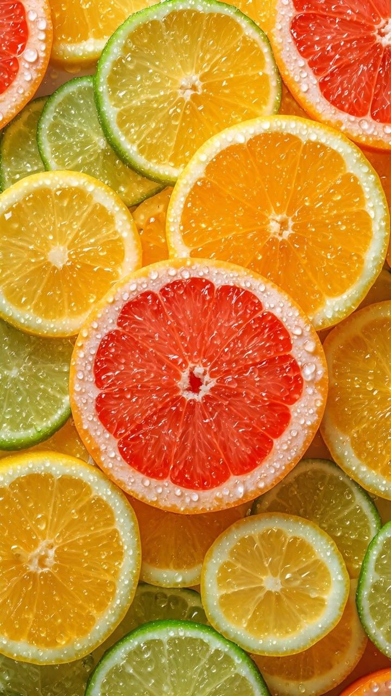
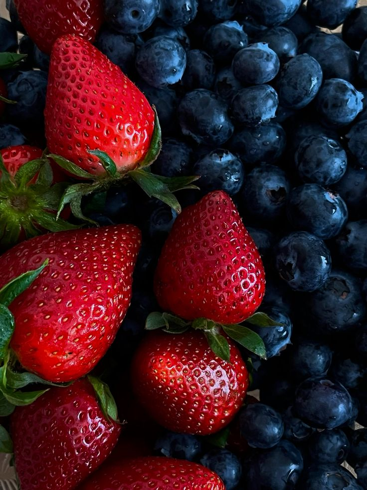
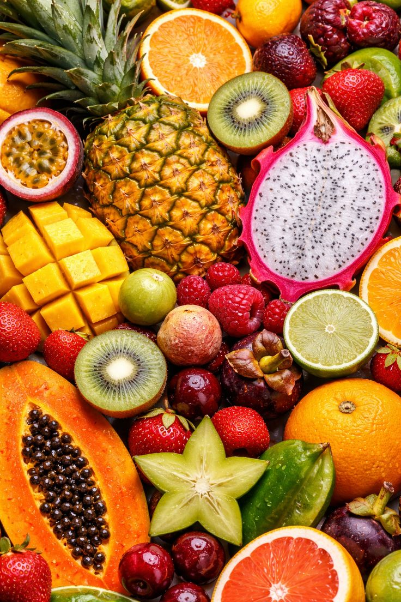

What Are We Going To Talk About ?
{ This Website is going to explore the benefits of different types of friuts and how they help to improve our daily Health}
How Each One Supports Health:
1.Citrus Fruits
-They poost immune system and provide antural energy lift to strat your day

2.Berries
-They help protect your heart and improve brain functions

3.Tropical
-They support heart health with high levels of essential vitamins and fiber
